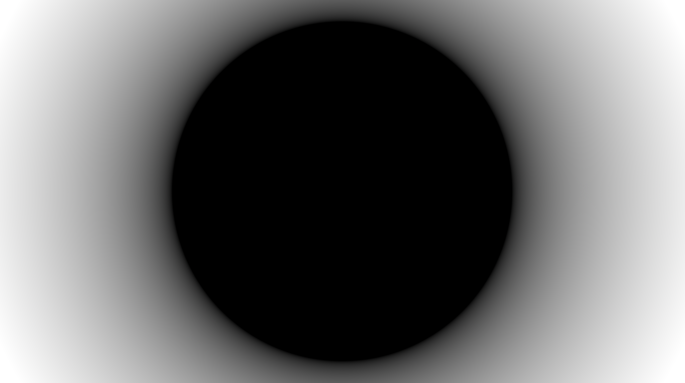
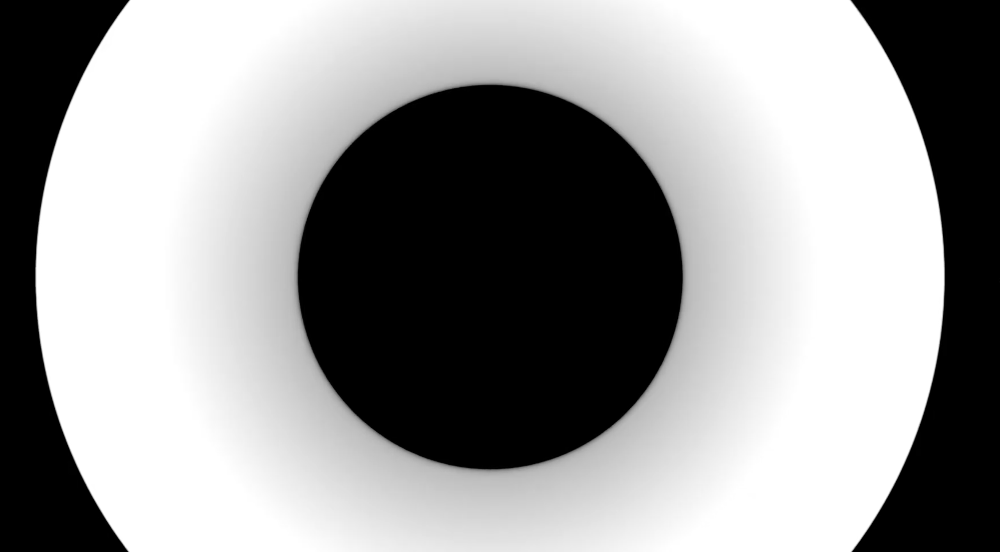
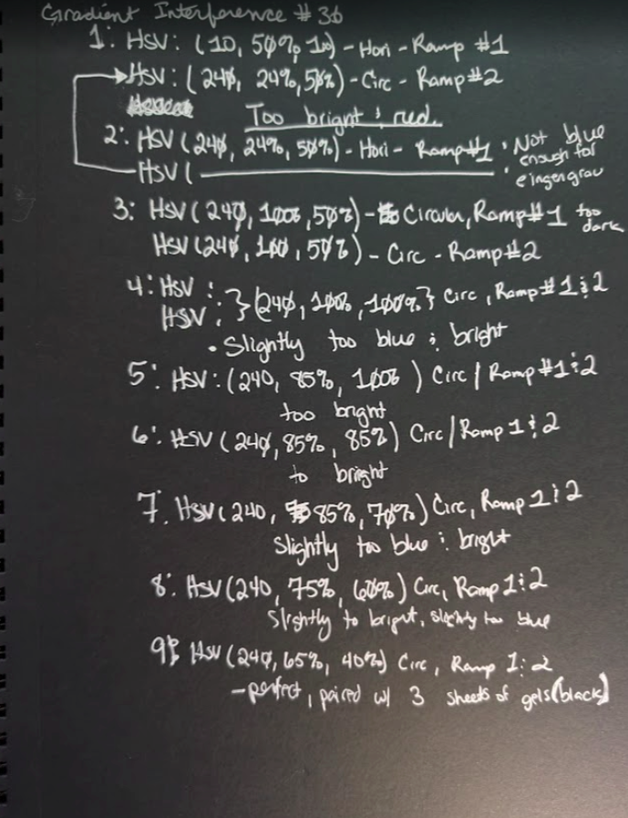

Gradient Interference — Segment One (80 studies, 18 weeks)
STUDY #0712026-06-13

#071 — Gradient Interference, non-harmonic
Constructive and destructive radial interference. Photoreceptors fatigued - experiencing negative afterimages.
Static generation with eyes open and closed.
Frequencies
0.0003 Hz (≈55.6 mins)
0.0063 Hz (≈2.6 mins)
0.0077 Hz (≈2.3 mins)
0.0087 Hz (≈1.9 mins)
2.5 Hz (≈0.4 sec)
Heart Rate
62 BPM
Room Temperature
75°F | 24°C
Witness
self
Presence: Centric and illusory. The edges of any definable shape do not appear solid. Experienced a
feedback response between the gradients of 2D and 3D. Physiological shifts are the negative afterimages.
Shifts of dimensionality?
STUDY #0622026-05-21

#062 — Gradient Interference, non-harmonic
Afterimage experiences are strong because of the sharp vividness between the black and white.
Once the frame neutralizes and the visual field is gray, the eye begins to generate its own noise.
Frequencies
0.0003 Hz (≈55.6 mins)
0.0079 Hz (≈2.1 mins)
0.0087 Hz (≈1.9 mins)
0.0635 Hz (≈15.75 sec)
0.0728 Hz (≈13.7 sec)
Witness
self
Presence: Visualized. Fatigued photoreceptors. Is the presence explainable?
Must presence be justified? The main physiological shifts are negative afterimages.
STUDY #0492026-04-23
#049 — Gradient Interference, non-harmonic
An afterimage of a blue or red circle is present when the radial interference is destructive.
Randomized moments of the circle shifting to purple, and once it fades, a green afterimage is present.
Frequencies
0.003 Hz / 0.0056 Hz (≈1:1.867)
Sub-perceptual
20 Hz — felt, not seen
Emergent beat
0.0026 Hz ≈ 6.4 min
Witness
self
Presence: unresolved. The light is not absent. Presence is not consistent.
When the red circle emerges from the dark, the body is more excited and calms when the
blue circle emerges. Main physiological shifts are the negative afterimages.
STUDY #0362026-04-03

#036 — HSV Adjustments
Experimenting with black gels to detect how the shadows and light interact with the space.
Shadows are sharp, creating imagined dimensionality within the space. Eye movements: slow. Experiencing
flashes of light. The gel sheets help aid in the tangibility of the gradient interference.
Frequencies
0.0037 Hz / 0.007 Hz (≈1:1.892)
Emergent beat
0.0033 Hz ≈ 5.1 min
Witness
self
Presence: Tangible. Why does the center feel “safe”?
Safe from what? Is it because the center feels stable?
What if I remove that sense of stability? Centeredness? How? Resolve framing.
STUDY #0172026-03-11
#017 — Gradient Interference, non-harmonic
The momentary superposition finds the retina as I am plumbing the dark field for something to engage with.
When it does, it fades away.
Frequencies
0.0042 Hz / 0.0033 Hz (≈1:1.273)
Emergent beat
0.0009 Hz ≈ 18.5 min
Witness
self
Experience: ~30 minutes. Lost track of time. I do not understand what I am seeing. Going to make incremental
adjustments to provoke varied responses. Presence? Uncertain.